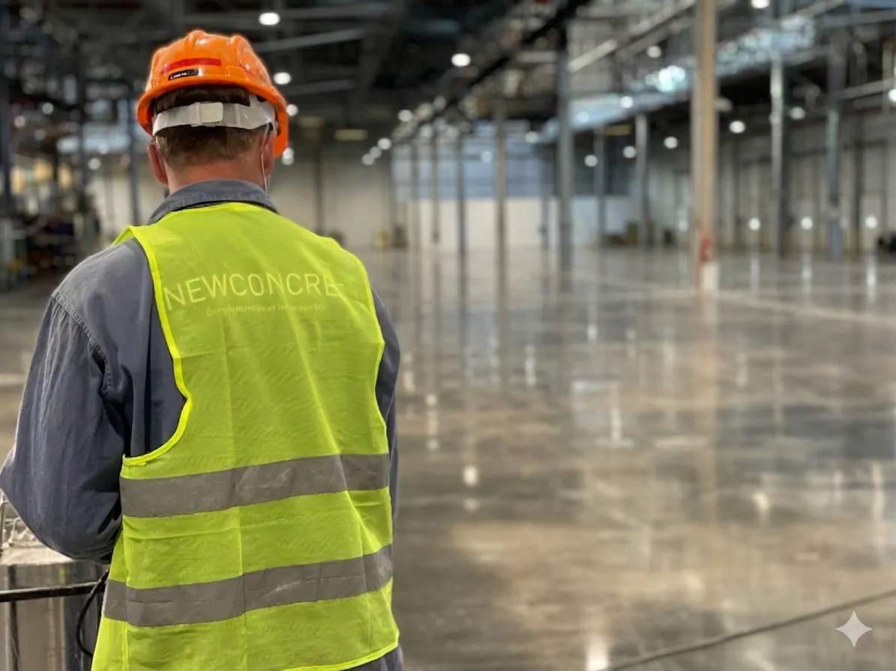
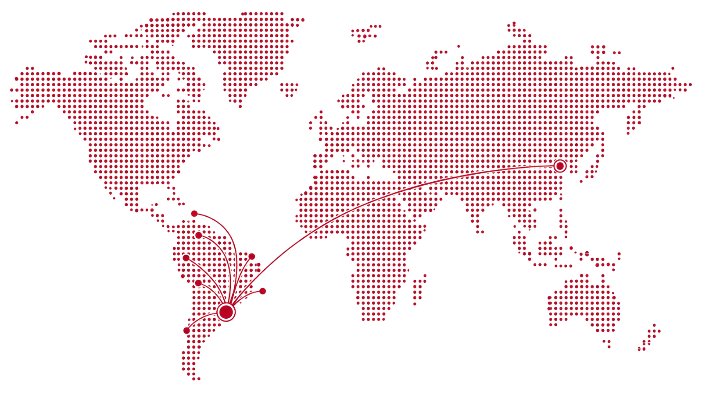
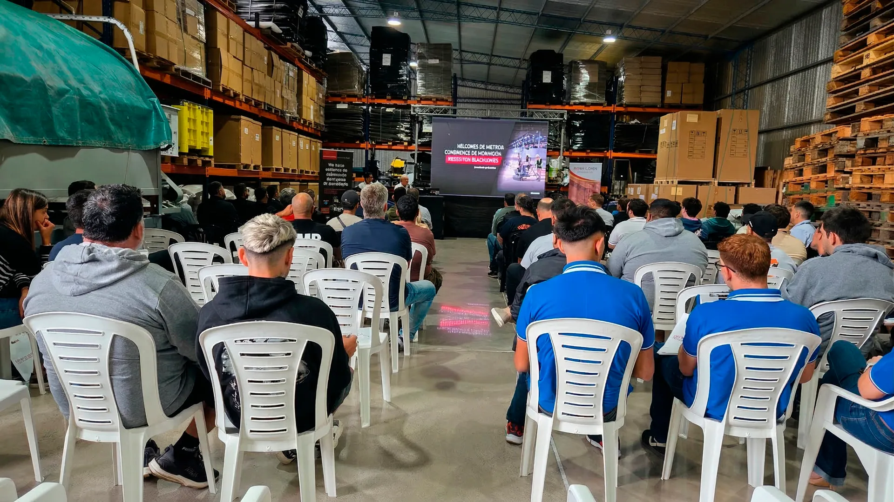

Hacelo fácil, hacelo rápido,
hacelo con NewConcret.
Tecnología, productos, capacitación y soporte técnico para pisos de hormigón más resistentes, durables y profesionales.

Soluciones integrales para pisos industriales. No vendemos solo productos o máquinas: desarrollamos soluciones para que cada superficie alcance su mejor desempeño según el uso, el tránsito y el resultado buscado.
En alianza con socios estratégicos, fabricamos maquinaria e insumos para el pulido de pisos, destinados al mercado latinoamericano.
En Argentina desarrollamos productos químicos especializados para pisos de hormigón, que exportamos a distintos países de la región.
Presencia en más de 8 países del mercado latinoamericano.

Máquinas, químicos e insumos para cada etapa del proceso.

Capacitación técnica permanente
Creemos que la calidad del resultado depende tanto del producto como del conocimiento técnico detrás de cada aplicación. Mantenemos un compromiso constante con la formación profesional, la actualización de procesos y la incorporación de nuevas tecnologías.
Acompañamos a aplicadores y clientes con asesoramiento técnico, capacitaciones y soporte para ejecutar proyectos con mayor seguridad, eficiencia y calidad.
Un piso no se termina cuando se pule. El sistema NewConcret acompaña todo el ciclo del hormigón, desde la preparación hasta el mantenimiento cotidiano.
Tecnología, productos, capacitación y soporte técnico para pisos de hormigón más resistentes, durables y profesionales.